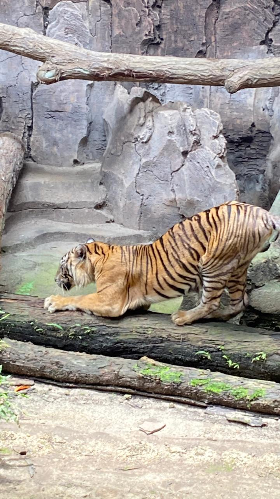

Sumatran Tiger

- Scientific Name: Panthera tigris sumatrae
- Habitat: Tropical rainforests and peat swamps of Sumatra.
- Fun Fact: They are the smallest of all tigers, allowing them to move easily through thick jungles. They also have "webs" between their toes which make them powerful swimmers!
- Conservation Status: Critically Endangered
← Back to Animal List